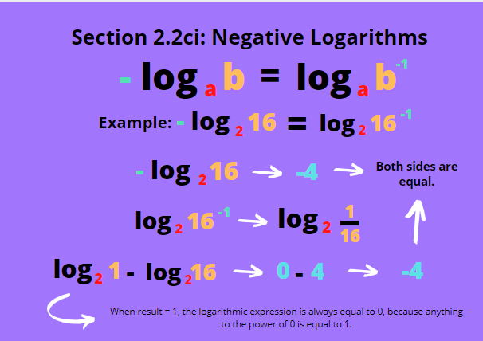
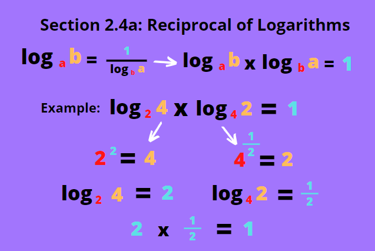

Logarithm is the opposite of exponents which we have learned last chapter. In solving exponents, we are aiming to find the product, but in solving logarithms, we are aiming to find the exponent.
General form: log ab
Example: log 39 = 2, has a similar meaning to 32 = 9
Important-to-note:
1. a, the base, should always be more than 0.
2. When no base is written, it can be assumed that the base is equal to 10.
3. Logarithms with base 0 or 1 are not commonly written or used because when multiplied to any power, their results will always be 0 and 1, or it doesn't exist, respectively.
Similar with exponents, logarithms also have rules for addition, subtraction and multiplication. Division and multiplication in logarithms are commonly done together, so for this chapter, we will discuss them as one. The rules work like the exponents, just slightly different.
a. Product Rule
This rule states that: logabc = logab + logac.
Using this rule will require both of the bases to be the same (as can be seen on the example, both bases are a). This rule cannot be directly be used if the bases are different.
We can prove this rule by using the following example:
log232 = log24 + log28 --> log2(4)(8) = log24 + log28
Left side: log2(4)(8) = log232 = 5
Right side: log24 + log28 = 2 + 3 = 5
As we can see, they both produce the same results, thus the formula is valid.
b. Quotient Rule
This next rule states: logab/c = logab - logac, oppositely to the previous.
Similar like before, it requires both bases to be the same. Here's an example:
log33 = log327 - log39 --> log3(27÷9) = log327 - log39
Left side: log3(27÷9) = log33 = 1
Right side: log327 - log39 = 3 - 2 = 1
Both sides are once again equal to each other.
Quick question: What happens if the logarithm can't be converted to a whole number?
Not all logarithms can be equal to whole numbers, but we don't have to compute them that way all the time. Both the Product and Quotient Laws are of great use here. You can always divide or multiply their results first, then solve the logarithm. An example is provided on the right.
c. Power Rule
What happens when the result of the logarithm is in exponential form? Let's say it looks something like ths format: logabc. The form can be changed into a normal logarithm in it's simplified form by moving the exponent to the front and make it the coefficient. This results in the following principle:
logabc = clogab
This rule can also be applied to negative exponents, this is discussed below.

i. Negative Logarithms
We know that logarithms can't have a negative base, but the expression itself can be represented in negative values.
For example, we have - logab, we can transform the negative sign and make the term positive by making -logab = x, and logab = -x, from which we can change into a-x = b
(a-x)(ax) = b(ax)--> 1 = b(ax)
b-1 = ax --> logab-1 = x
From here we can obtain -(logab) = loga(b-1)
The bases of logarithmic expressions can be changed into any number (as long as it's positive) that can help us solve the question easier. It only involves a little twist. Let's say we have logab, and we would like to change the base to c. The expression can be changed like below:
logab = logcb/logca
Note: Usually questions won't ask you to solve the logarithms completely. Either they ask you to express it as it is, the logarithmic expressions can be expressed into whole numbers, or that calculators are allowed to be used to evaluate it. Most of the time it's the first and second possibilities, though.
This rule helps us eliminate one logarithmic expression or get its form closer to what the question requires you to find. An example provided on the right explains the application of this statement.
There are less common logarithmic rules that are very useful in solving equations. These are actually the maniulation of the rules that we've discussed before, mainly the Change of Base Law and the Power Rule.
a. Reciprocal of Logarithms
We know that the 'reciprocal' of a number is that number as a denominator with 1 as the numerator, like the reciprocal of a would be 1/a. This applies a little bit differently in logarithms, and it's basically using the change of base rule, but the new base is equal to the logarithm's result. Below is how it's done:
We'll use logab, and change it with a new base of b (because b is the logarithm's result). Doing that we have:
loga = logbb/logb, where logb can be converted into 1.
So, logab = 1/logba, which is its reciprocal.
Commonly, this rule is expressed as logab x logb = 1, because when a number is multiplied by its reciprocal, it equals to 1.
b. Logarithm as Exponents
Another less commonly known logarithmic law is when a logarithmic expression becomes an exponent. Let's take alogab as an example. It looks similar to when coverting logaa to 1. Well it's almost as simple as that. Let's make our example equal to x:
x = alogab, and by using the common logarithmic law, we get logax = logab
This gives us x = b, and when substituted back to it's original value, we have alogab = b.
An example with numbers is provided on the right.
From this, the rule alogcb = blogca also applies.
c. The Base is an Exponential Expression
Now what if the base can be expressed as an exponential expression? We know that the result's exponent can be expressed as a coefficient, well the base's exponent can be too. However, the base's exponent's reciprocal will be used as the coefficient. An example is provided below:
We have logabx, the reciprocal of its base's exponent is 1/b. Move that to the front:
logabx = 1/b x logax.
When the result also can be expressed as an exponential expression, their coefficients can be combined. We get:logabxc = c/b x logax, the overall coefficient will be the exponent of the result divided by the exponent of the base.
Leonhard Euler is a Swiss mathematician who invented Euler's constant e, which is approximately 2.781828 and used commonly in logarithms and integrals.
Natural logarithms become more frequently encountered in Grade 10. They are logarithms that use a mathematical constant e - Euler's number - as the logarithm's base. It is usually represented as lnx, which has the same meaning as logex. Involving the Change of Base Law, another uncommon rule can be derived. Let's say we have lna (or logea).
The rule states lna = loge10 x log10a
This is delivered from the expression loga = logea/loge10, which has the same format as the Change of Base Law. Remember that when the logarithmic expression has no base, its base is 10.
This rule is basically converting ln (logarithm base e) to the familiar log we often use.